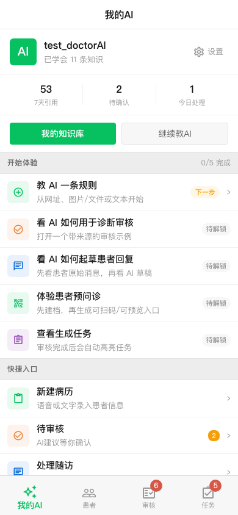
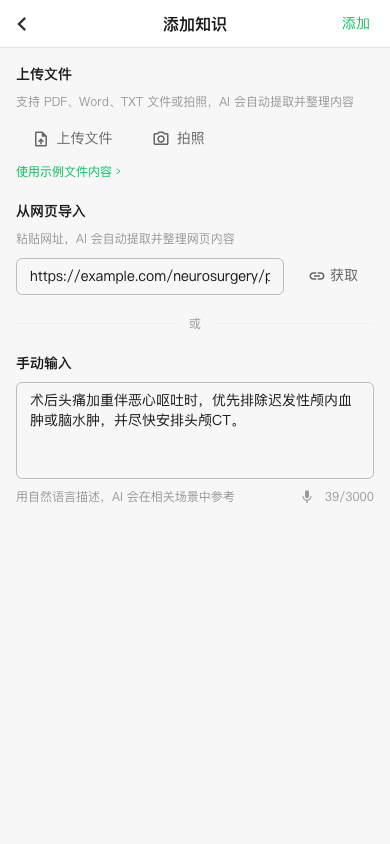
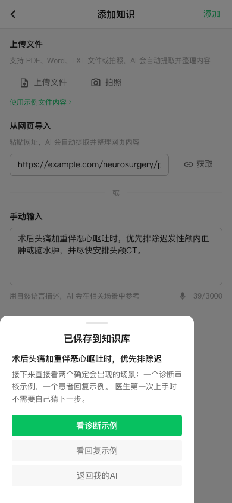
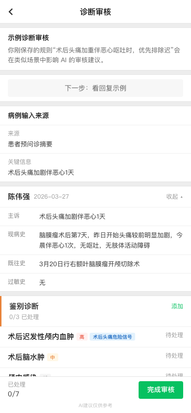
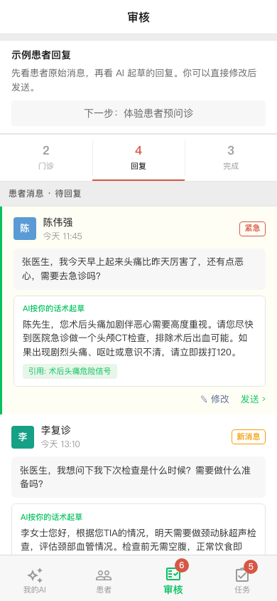
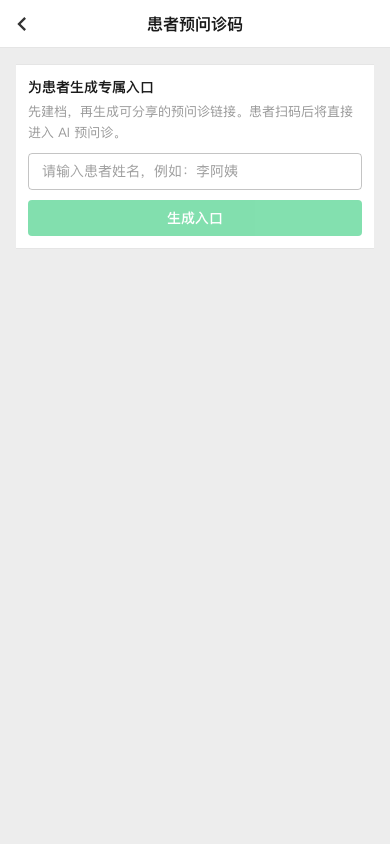
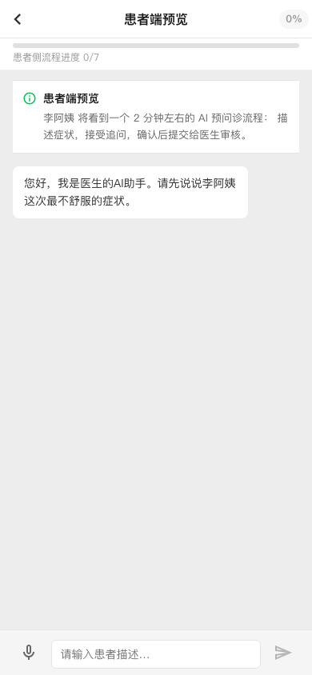
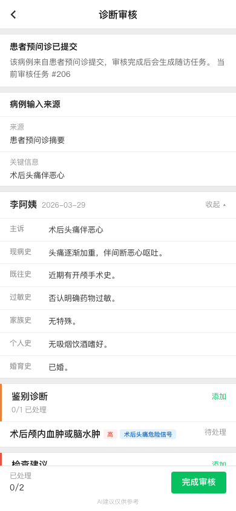
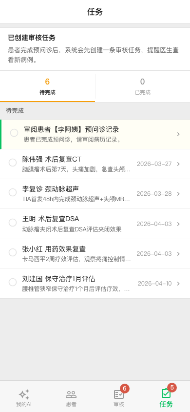
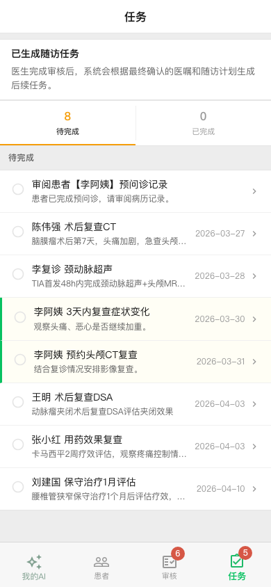

Doctor self-guided walkthrough captured against /debug/doctor with seeded mock state and deterministic example IDs.
Checklist starts at 教 AI 一条规则 and locks the downstream proofs until onboarding progresses.

The onboarding route opens the add-knowledge surface with deterministic prefills for URL and text, plus the file example shortcut.

After saving the rule, the sheet exposes the deterministic next actions: diagnosis proof, reply proof, or back to MyAI.

The review screen shows provenance first, then suggestions, with the cited rule visible on the same screen.

The reply-review tab preserves the lineage: original patient message first, AI draft second, cited rule inline.

We used the QR onboarding surface to create a deterministic patient entry, then opened the doctor-side patient preview mini page.

Preview page:

A seeded preview submission created record #108 and review task #206. The doctor review page shows the patient-summary provenance; the task tab highlights the generated review task.

Generated review task:

Finalizing record #108 created follow-up task IDs 207 and 208, both visible and highlighted in the task list.
